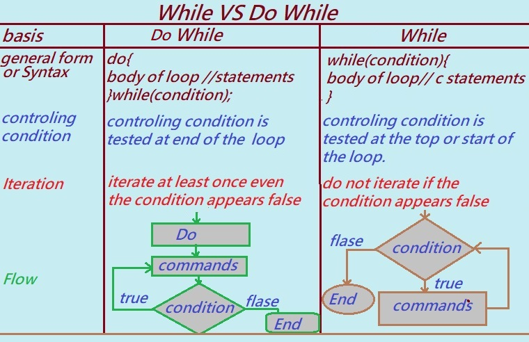

In this tutorial section, we will learn the difference between the while loop and the do-while loop in the C programming language.
Both while and do-while loops are types of iterative (looping) statements used in C. However, there are some key differences between them. In this tutorial, we will compare them in a tabular form. But first, let's briefly understand what each loop does.
What is a while loop?
A while loop in C is a control flow statement that repeatedly executes a block of code as long as a given Boolean condition is true. In other words, a while loop is a type of iterative or repeating statement.
What is a do-while loop?
A do-while loop is known as an Exit-Controlled Loop. It is similar to a while loop, except that it guarantees the loop body will execute at least once.
The main difference is that a do-while loop checks the condition after executing the loop body, whereas a while loop checks the condition before execution.
While vs Do-While Loop in C Programming – Explained with Syntax and Examples
Following are the list of the differences between while and do-while loop in C programming
While Loop:
1. In a while loop, the condition is checked before executing the statement(s).
2. Syntax: while(condition) — no semicolon is present at the end of the condition.
3. Brackets (curly braces) are not required if there is only a single statement inside the loop.
4. The variable used in the condition must be initialized before the loop starts.
5. The while loop is an entry-controlled loop.
Do-While Loop:
1. The statement(s) inside the loop execute at least once, and the condition is checked after the execution.
2. Syntax: while(condition); — a semicolon is present at the end of the loop.
3. Brackets (curly braces) are always required, even for a single statement.
4. The variable used in the condition can be initialized either before or within the loop.
5. The do-while loop is an exit-controlled loop.

The diagram below shows the difference between while and do-while loops in C programming.
Let's break it down and understand how these two loops differ — one step at a time.
1. Syntax:
First, here's what the general syntax looks like for both loops:
i. while loop:
while(condition)
{
// code inside the loop
}
ii. do-while loop:
do
{
// code inside the loop
} while(condition);
2. When the condition is checked:
while loop: The condition is checked before the loop starts. So if the condition is false right away, the loop won't run at all.
do-while loop: Here, the condition is checked after the loop runs. That means the code inside the loop will run at least once, no matter what.
3. How iteration works:
Iteration just means repeating a set of instructions until a condition is no longer true.
In a while loop: If the condition is false at the beginning, the loop body won’t run.
In a do-while loop: The loop body runs once before checking the condition — so it always runs at least once.
4. Flow of control:
A flowchart helps show how control moves through each loop. In a while loop, control goes straight to the condition check. In a do-while loop, it first goes to the loop body, then checks the condition. That’s the key difference in how they work behind the scenes.
C Program to Illustrate Use of While Loop:
// C program that displays the numbers from 1 to 10:
#include<stdio.h>
int main()
{
int i = 1;
while(i <= 10)
{
printf("\n%d", i);
i++;
}
return 0;
}
Output: 1 2 3 4 5 6 7 8 9 10
Explanation:
In this program, we first declare an integer variable i and initialize it to 1 using int i = 1;.
Then, the program checks the condition in the while loop: i <= 10. Since 1 is less than or equal to 10, the condition is true and the loop begins executing.
Inside the loop, printf("\n%d", i); prints the current value of i, which is 1. Then, i++; increases the value of i by 1, so i becomes 2.
The control goes back to the top of the while loop and checks the condition again: 2 <= 10. Since it's still true, the loop continues.
This process repeats until i becomes 11. At that point, the condition i <= 10 is false, and the loop stops. Control exits the loop, and the program ends.
C program to illustrate use of do while loop
/* C program given below displays series of number 1 ,2,3.....10 */
#include <stdio.h>
int main()
{
int i=1;
do
{
printf("\n %d",i);
i += 1;
}
while(i<=10);
}
Output: 1 2 3 4 5 6 7 8 9 10
Explanation:
The variable i is declared as an integer and initialized to 1 using int i = 1;.
Since this is a do-while loop, the program begins by executing the loop body first — without checking the condition. The printf("\n%d", i); statement prints 1 to the screen.
Then i += 1; increments the value of i by 1, so now i becomes 2.
After that, the program checks the condition in the while part: i <= 10. Since 2 is less than or equal to 10, the condition is true, and the loop runs again.
This process continues — printing each value of i from 1 to 10 — until i becomes 11. At that point, the condition i <= 10 becomes false, and the loop terminates.
Note: The do-while loop always executes its body at least once, even if the condition is false at the start.
Previous Topic:-->> Nested while loop in C || Next topic:-->>Difference Between goto and loop in C.
Other Topics: